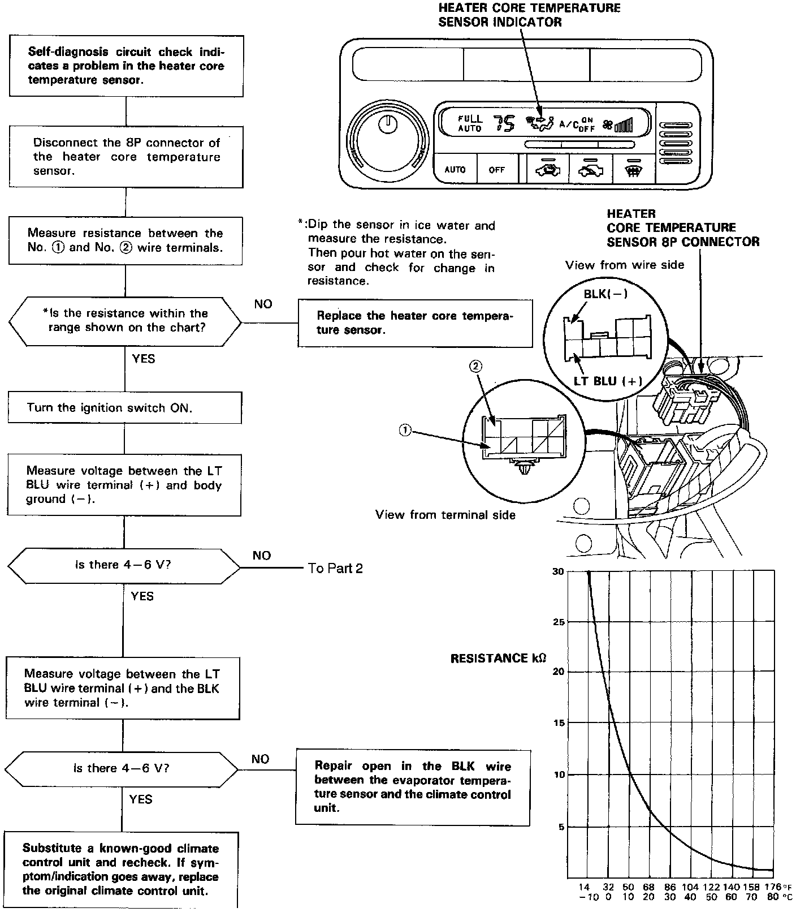
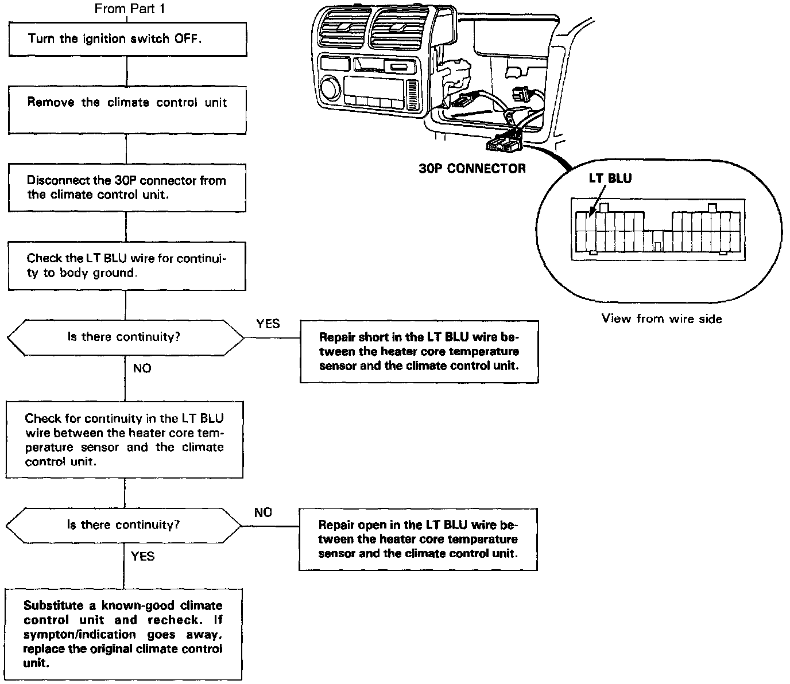

Diagnostic Flowcharts
HEATER CORE TEMPERATURE SENSORThe heater core temperature sensor is a temperature dependent resistor (thermistor). The resistance of the thermistor decreases as the engine coolant temperature increases. Use a digital multimeter (KS-AHM-32-003).
CAUTION: The sensor uses a thermistor which can be damaged if high current is applied to it during testing. Therefore, use a circuit tester that puts out a measuring current of 1 mA or less. (At the 20 K Ohm range.)

